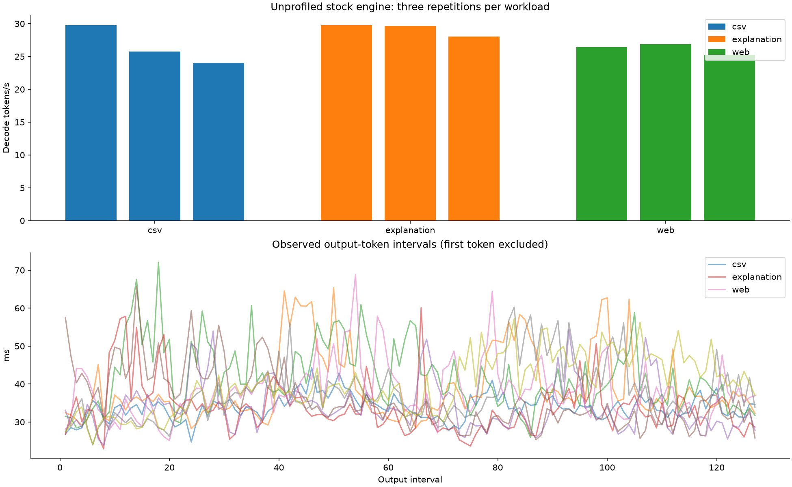
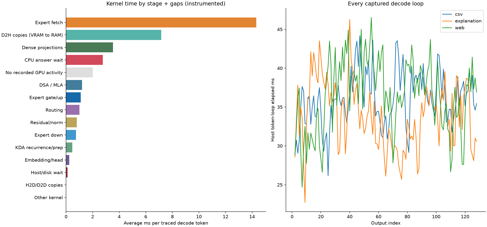
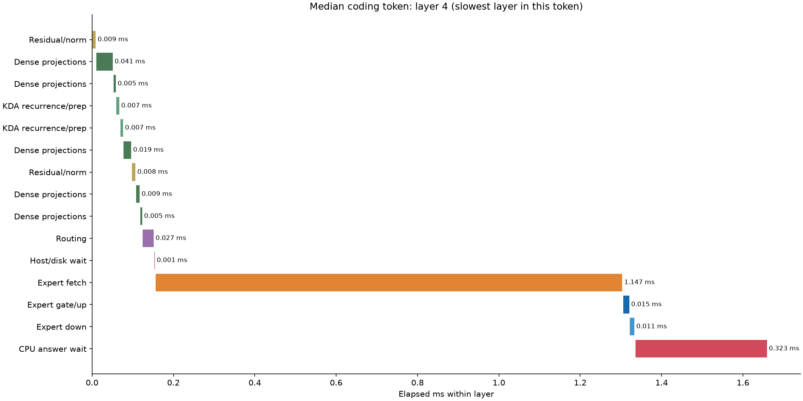
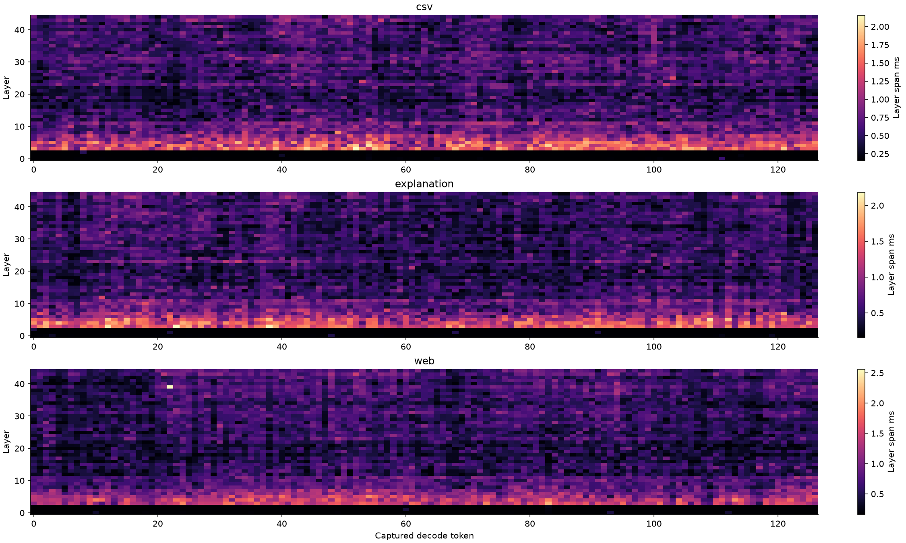

GLM GSQ-RCO 3.0bit Q4-attention · RTX 5090 / 9950X3D · c=1 · 131,072-token capacity · no MTP or suffix speculation. Three unprofiled repetitions per task; one CUDA/NVTX capture spanning three task runs. 128 output tokens per request. Warm-up excluded.
GPU bars are actual execution, attributed to the launching layer through CUDA correlation IDs. CPU bars are elapsed expert-service calls (including worker coordination), not summed CPU-core execution. Rows overlap: do not add CPU time to GPU time. Grey/unoccupied time means no recorded GPU kernel/copy, not proof that the CPU caused the gap. Mapped-RAM expert fetches appear as GPU kernels, not memcpy events. Nsight changes timing; use stock runs for throughput and trace runs for diagnosis. CUDA API tracing is enabled; CPU instruction sampling and OS context switches are not captured.
Capture caveats: profiler residency reduces expert slots from 2731 to 2722. Coding output differs between the first stock run and trace; explanation and web output agree. Stock repetitions also expose any hybrid run-to-run differences in the table. These are workload measurements, not a fixed-token causal estimate of profiler overhead. Capacity is 128K, but these short prompts occupy only tens to hundreds of tokens. The decode TPS counter includes the first token sampled from prefill; token timelines cover the subsequent 127 forward passes per task.
| task | stock_TPS | stock_TPS_min | stock_TPS_max | trace_TPS | trace_tokens | trace_mean_token_ms | output_ids_equal | stock_repeats_identical |
|---|---|---|---|---|---|---|---|---|
| csv | 26.280 | 23.993 | 29.748 | 27.935 | 127 | 36.047 | False | False |
| explanation | 29.137 | 28.036 | 29.783 | 29.698 | 127 | 33.908 | True | False |
| web | 26.176 | 25.256 | 26.892 | 27.580 | 127 | 36.515 | True | True |

| task | repeat | tokens | decode_TPS | decode_ms | mean_interval_ms | median_interval_ms | p95_interval_ms | max_interval_ms |
|---|---|---|---|---|---|---|---|---|
| csv | 1 | 128 | 29.748 | 4302.800 | 33.879 | 33.896 | 38.924 | 44.294 |
| explanation | 1 | 128 | 29.783 | 4297.800 | 33.840 | 33.073 | 50.120 | 60.125 |
| web | 1 | 128 | 26.434 | 4842.300 | 38.127 | 37.198 | 51.536 | 68.800 |
| csv | 2 | 128 | 25.733 | 4974.200 | 39.165 | 35.826 | 61.384 | 65.381 |
| explanation | 2 | 128 | 29.660 | 4315.600 | 33.980 | 32.594 | 47.213 | 54.337 |
| web | 2 | 128 | 26.892 | 4759.800 | 37.477 | 36.153 | 56.032 | 60.253 |
| csv | 3 | 128 | 23.993 | 5334.900 | 42.006 | 40.110 | 58.186 | 72.094 |
| explanation | 3 | 128 | 28.036 | 4565.500 | 35.947 | 33.799 | 50.789 | 65.818 |
| web | 3 | 128 | 25.256 | 5068.100 | 39.905 | 39.330 | 53.207 | 57.200 |

Stage averages include every scored decode forward pass, excluding prompt processing and warm-up. Kernel categories are exclusive; DMA may overlap kernels. The token CSV separately reconciles the union of device activity and CPU service against elapsed wall time.
| task | stage | mean_ms | p95_ms | max_ms |
|---|---|---|---|---|
| csv | Expert fetch | 14.548 | 18.807 | 21.338 |
| csv | Expert gate/up | 1.085 | 1.305 | 1.585 |
| csv | Expert down | 0.742 | 0.948 | 1.363 |
| csv | CPU answer wait | 2.970 | 4.039 | 4.740 |
| csv | Host/disk wait | 0.104 | 0.169 | 0.407 |
| csv | Routing | 1.011 | 1.211 | 1.545 |
| csv | Dense projections | 3.535 | 3.866 | 4.079 |
| csv | KDA recurrence/prep | 0.464 | 0.471 | 0.476 |
| csv | DSA / MLA | 1.207 | 1.410 | 1.762 |
| csv | Residual/norm | 0.803 | 0.800 | 1.031 |
| csv | Embedding/head | 0.240 | 0.235 | 0.631 |
| csv | Other kernel | 0.004 | 0.004 | 0.004 |
| csv | D2H copies (VRAM to RAM) | 7.329 | 9.208 | 10.074 |
| csv | H2D/D2D copies | 0.004 | 0.005 | 0.005 |
| csv | No recorded GPU activity | 2.001 | 2.366 | 2.721 |
| explanation | Expert fetch | 13.240 | 18.660 | 22.733 |
| explanation | Expert gate/up | 1.138 | 1.469 | 1.674 |
| explanation | Expert down | 0.752 | 0.967 | 1.112 |
| explanation | CPU answer wait | 2.604 | 3.306 | 4.368 |
| explanation | Host/disk wait | 0.107 | 0.191 | 0.517 |
| explanation | Routing | 1.010 | 1.215 | 1.640 |
| explanation | Dense projections | 3.520 | 3.846 | 4.774 |
| explanation | KDA recurrence/prep | 0.468 | 0.471 | 0.808 |
| explanation | DSA / MLA | 1.188 | 1.379 | 1.675 |
| explanation | Residual/norm | 0.825 | 1.103 | 1.142 |
| explanation | Embedding/head | 0.236 | 0.235 | 0.578 |
| explanation | Other kernel | 0.004 | 0.004 | 0.004 |
| explanation | D2H copies (VRAM to RAM) | 6.812 | 9.071 | 10.435 |
| explanation | H2D/D2D copies | 0.004 | 0.005 | 0.007 |
| explanation | No recorded GPU activity | 2.000 | 2.372 | 2.711 |
| web | Expert fetch | 15.167 | 21.242 | 22.756 |
| web | Expert gate/up | 1.079 | 1.321 | 1.679 |
| web | Expert down | 0.757 | 1.021 | 1.429 |
| web | CPU answer wait | 2.719 | 3.552 | 6.313 |
| web | Host/disk wait | 0.107 | 0.227 | 0.462 |
| web | Routing | 1.014 | 1.215 | 1.468 |
| web | Dense projections | 3.538 | 3.880 | 4.913 |
| web | KDA recurrence/prep | 0.471 | 0.474 | 0.808 |
| web | DSA / MLA | 1.190 | 1.420 | 1.790 |
| web | Residual/norm | 0.816 | 1.015 | 1.239 |
| web | Embedding/head | 0.243 | 0.237 | 0.642 |
| web | Other kernel | 0.004 | 0.004 | 0.004 |
| web | D2H copies (VRAM to RAM) | 7.371 | 10.272 | 10.979 |
| web | H2D/D2D copies | 0.004 | 0.005 | 0.007 |
| web | No recorded GPU activity | 2.034 | 2.368 | 3.077 |
| task | fetch_MB | d2h_MB | d2h_ms | fetch_payload_GB_s | d2h_payload_GB_s | cpu_service_ms | cpu_during_fetch_ms | cpu_during_math_ms | cpu_during_wait_ms |
|---|---|---|---|---|---|---|---|---|---|
| csv | 513.874 | 413.507 | 7.329 | 35.322 | 56.419 | 17.572 | 13.882 | 1.036 | 2.397 |
| explanation | 463.386 | 384.921 | 6.812 | 34.999 | 56.508 | 15.793 | 12.546 | 0.940 | 2.065 |
| web | 533.746 | 416.471 | 7.371 | 35.190 | 56.499 | 17.714 | 14.387 | 0.929 | 2.160 |
D2H is primarily whole-expert demotion at the token boundary: 8.3 / 10.8 / 14.2 MB blobs. This is a different transfer from the GPU fetch kernel pulling RAM experts. CPU-service time overlaps fetch, arithmetic and wait kernels; those columns must not be added to token duration. Host miss masks are requests for service, not proof of SSD reads (the engine logged zero disk reads).
Select fastest, median or slowest captured token for each task. Vertical labels mark layer numbers. Full per-token, per-layer and per-kernel CSVs below cover every captured token.

Bars retain their actual offsets and gaps; this is not a synthetic stacked schedule.

| task | layer | mean_span_ms | mean_cumulative_ms | mean_fetch_ms | mean_cpu_wait_ms |
|---|---|---|---|---|---|
| csv | 0 | 0.175 | 7.848 | 0.000 | 0.000 |
| csv | 1 | 0.164 | 8.014 | 0.000 | 0.000 |
| csv | 2 | 0.165 | 8.182 | 0.000 | 0.000 |
| csv | 3 | 1.444 | 9.628 | 0.995 | 0.141 |
| csv | 4 | 1.338 | 10.969 | 0.989 | 0.143 |
| csv | 5 | 1.310 | 12.280 | 0.979 | 0.118 |
| csv | 6 | 1.072 | 13.355 | 0.742 | 0.109 |
| csv | 7 | 1.039 | 14.396 | 0.625 | 0.075 |
| csv | 8 | 0.760 | 15.158 | 0.441 | 0.090 |
| csv | 9 | 0.728 | 15.888 | 0.449 | 0.076 |
| csv | 10 | 0.748 | 16.640 | 0.465 | 0.079 |
| csv | 11 | 0.866 | 17.507 | 0.472 | 0.080 |
| csv | 12 | 0.519 | 18.029 | 0.237 | 0.066 |
| csv | 13 | 0.560 | 18.591 | 0.290 | 0.062 |
| csv | 14 | 0.531 | 19.124 | 0.269 | 0.059 |
| csv | 15 | 0.616 | 19.742 | 0.233 | 0.064 |
| csv | 16 | 0.485 | 20.229 | 0.218 | 0.068 |
| csv | 17 | 0.483 | 20.714 | 0.224 | 0.057 |
| csv | 18 | 0.368 | 21.085 | 0.103 | 0.062 |
| csv | 19 | 0.495 | 21.582 | 0.116 | 0.059 |
| csv | 20 | 0.386 | 21.969 | 0.116 | 0.059 |
| csv | 21 | 0.431 | 22.402 | 0.154 | 0.068 |
| csv | 22 | 0.471 | 22.876 | 0.206 | 0.059 |
| csv | 23 | 0.716 | 23.594 | 0.339 | 0.065 |
| csv | 24 | 0.566 | 24.162 | 0.299 | 0.066 |
| csv | 25 | 0.463 | 24.627 | 0.194 | 0.056 |
| csv | 26 | 0.563 | 25.192 | 0.297 | 0.065 |
| csv | 27 | 0.591 | 25.785 | 0.204 | 0.062 |
| csv | 28 | 0.596 | 26.384 | 0.338 | 0.059 |
| csv | 29 | 0.516 | 26.901 | 0.249 | 0.060 |
| csv | 30 | 0.662 | 27.565 | 0.400 | 0.062 |
| csv | 31 | 0.705 | 28.272 | 0.318 | 0.064 |
| csv | 32 | 0.655 | 28.929 | 0.385 | 0.071 |
| csv | 33 | 0.572 | 29.504 | 0.299 | 0.060 |
| csv | 34 | 0.422 | 29.928 | 0.160 | 0.056 |
| csv | 35 | 0.544 | 30.474 | 0.168 | 0.061 |
| csv | 36 | 0.586 | 31.062 | 0.330 | 0.059 |
| csv | 37 | 0.529 | 31.593 | 0.265 | 0.060 |
| csv | 38 | 0.558 | 32.156 | 0.288 | 0.067 |
| csv | 39 | 0.638 | 32.798 | 0.253 | 0.064 |
| csv | 40 | 0.498 | 33.300 | 0.229 | 0.066 |
| csv | 41 | 0.571 | 33.873 | 0.293 | 0.076 |
| csv | 42 | 0.506 | 34.381 | 0.235 | 0.060 |
| csv | 43 | 0.686 | 35.069 | 0.304 | 0.060 |
| csv | 44 | 0.638 | 35.709 | 0.377 | 0.060 |
| explanation | 0 | 0.175 | 7.321 | 0.000 | 0.000 |
| explanation | 1 | 0.168 | 7.492 | 0.000 | 0.000 |
| explanation | 2 | 0.164 | 7.663 | 0.000 | 0.000 |
| explanation | 3 | 1.444 | 9.110 | 1.008 | 0.134 |
| explanation | 4 | 1.373 | 10.485 | 1.047 | 0.115 |
| explanation | 5 | 1.255 | 11.742 | 0.944 | 0.098 |
| explanation | 6 | 1.004 | 12.748 | 0.698 | 0.077 |
| explanation | 7 | 0.932 | 13.682 | 0.511 | 0.079 |
| explanation | 8 | 0.786 | 14.470 | 0.481 | 0.078 |
| explanation | 9 | 0.671 | 15.143 | 0.403 | 0.054 |
| explanation | 10 | 0.806 | 15.952 | 0.531 | 0.071 |
| explanation | 11 | 0.815 | 16.770 | 0.443 | 0.053 |
| explanation | 12 | 0.519 | 17.291 | 0.236 | 0.066 |
| explanation | 13 | 0.517 | 17.811 | 0.242 | 0.062 |
| explanation | 14 | 0.549 | 18.362 | 0.285 | 0.056 |
| explanation | 15 | 0.601 | 18.965 | 0.228 | 0.055 |
| explanation | 16 | 0.442 | 19.411 | 0.184 | 0.056 |
| explanation | 17 | 0.473 | 19.886 | 0.203 | 0.069 |
| explanation | 18 | 0.384 | 20.272 | 0.116 | 0.055 |
| explanation | 19 | 0.453 | 20.727 | 0.076 | 0.059 |
| explanation | 20 | 0.392 | 21.121 | 0.126 | 0.055 |
| explanation | 21 | 0.452 | 21.576 | 0.178 | 0.064 |
| explanation | 22 | 0.449 | 22.027 | 0.179 | 0.057 |
| explanation | 23 | 0.707 | 22.736 | 0.335 | 0.060 |
| explanation | 24 | 0.519 | 23.257 | 0.255 | 0.061 |
| explanation | 25 | 0.466 | 23.726 | 0.212 | 0.052 |
| explanation | 26 | 0.457 | 24.185 | 0.191 | 0.050 |
| explanation | 27 | 0.558 | 24.744 | 0.186 | 0.055 |
| explanation | 28 | 0.488 | 25.235 | 0.227 | 0.062 |
| explanation | 29 | 0.476 | 25.713 | 0.220 | 0.054 |
| explanation | 30 | 0.514 | 26.231 | 0.261 | 0.051 |
| explanation | 31 | 0.580 | 26.814 | 0.195 | 0.059 |
| explanation | 32 | 0.507 | 27.323 | 0.259 | 0.047 |
| explanation | 33 | 0.468 | 27.793 | 0.205 | 0.053 |
| explanation | 34 | 0.421 | 28.216 | 0.162 | 0.055 |
| explanation | 35 | 0.525 | 28.744 | 0.157 | 0.053 |
| explanation | 36 | 0.493 | 29.239 | 0.244 | 0.044 |
| explanation | 37 | 0.520 | 29.761 | 0.265 | 0.052 |
| explanation | 38 | 0.528 | 30.291 | 0.264 | 0.057 |
| explanation | 39 | 0.583 | 30.876 | 0.212 | 0.052 |
| explanation | 40 | 0.454 | 31.333 | 0.182 | 0.065 |
| explanation | 41 | 0.512 | 31.847 | 0.261 | 0.051 |
| explanation | 42 | 0.516 | 32.365 | 0.255 | 0.053 |
| explanation | 43 | 0.641 | 33.008 | 0.271 | 0.053 |
| explanation | 44 | 0.551 | 33.562 | 0.300 | 0.051 |
| web | 0 | 0.177 | 7.911 | 0.000 | 0.000 |
| web | 1 | 0.165 | 8.078 | 0.000 | 0.000 |
| web | 2 | 0.163 | 8.245 | 0.000 | 0.000 |
| web | 3 | 1.404 | 9.652 | 0.976 | 0.125 |
| web | 4 | 1.392 | 11.047 | 1.057 | 0.122 |
| web | 5 | 1.234 | 12.283 | 0.921 | 0.107 |
| web | 6 | 1.037 | 13.323 | 0.737 | 0.082 |
| web | 7 | 0.987 | 14.312 | 0.574 | 0.079 |
| web | 8 | 0.755 | 15.069 | 0.465 | 0.067 |
| web | 9 | 0.742 | 15.813 | 0.480 | 0.064 |
| web | 10 | 0.759 | 16.574 | 0.492 | 0.070 |
| web | 11 | 0.794 | 17.371 | 0.402 | 0.069 |
| web | 12 | 0.470 | 17.843 | 0.210 | 0.056 |
| web | 13 | 0.498 | 18.343 | 0.222 | 0.067 |
| web | 14 | 0.573 | 18.918 | 0.307 | 0.066 |
| web | 15 | 0.611 | 19.531 | 0.228 | 0.053 |
| web | 16 | 0.439 | 19.972 | 0.161 | 0.061 |
| web | 17 | 0.501 | 20.476 | 0.228 | 0.068 |
| web | 18 | 0.375 | 20.853 | 0.107 | 0.056 |
| web | 19 | 0.499 | 21.354 | 0.118 | 0.062 |
| web | 20 | 0.433 | 21.789 | 0.159 | 0.060 |
| web | 21 | 0.378 | 22.169 | 0.110 | 0.060 |
| web | 22 | 0.473 | 22.644 | 0.207 | 0.057 |
| web | 23 | 0.664 | 23.310 | 0.282 | 0.059 |
| web | 24 | 0.576 | 23.888 | 0.317 | 0.056 |
| web | 25 | 0.502 | 24.392 | 0.239 | 0.058 |
| web | 26 | 0.533 | 24.927 | 0.266 | 0.065 |
| web | 27 | 0.600 | 25.532 | 0.232 | 0.051 |
| web | 28 | 0.585 | 26.119 | 0.325 | 0.054 |
| web | 29 | 0.517 | 26.638 | 0.255 | 0.060 |
| web | 30 | 0.602 | 27.242 | 0.350 | 0.057 |
| web | 31 | 0.723 | 27.967 | 0.339 | 0.064 |
| web | 32 | 0.635 | 28.604 | 0.381 | 0.055 |
| web | 33 | 0.547 | 29.154 | 0.285 | 0.061 |
| web | 34 | 0.459 | 29.615 | 0.187 | 0.061 |
| web | 35 | 0.573 | 30.190 | 0.200 | 0.055 |
| web | 36 | 0.648 | 30.840 | 0.390 | 0.053 |
| web | 37 | 0.634 | 31.477 | 0.368 | 0.057 |
| web | 38 | 0.624 | 32.104 | 0.366 | 0.054 |
| web | 39 | 0.776 | 32.882 | 0.391 | 0.071 |
| web | 40 | 0.571 | 33.455 | 0.300 | 0.066 |
| web | 41 | 0.612 | 34.071 | 0.352 | 0.052 |
| web | 42 | 0.585 | 34.658 | 0.323 | 0.054 |
| web | 43 | 0.796 | 35.456 | 0.421 | 0.055 |
| web | 44 | 0.694 | 36.152 | 0.438 | 0.049 |
Every token · Every layer, with cumulative elapsed time · Every kernel, sequential offsets and durations · Every copy · CPU service spans · Stage averages · Normal runs · Reconciliation checks